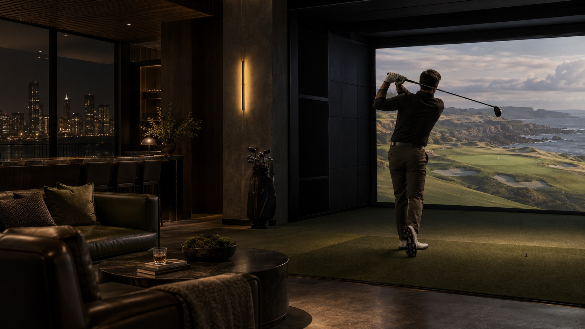

01 / НАЧАЛО МАРШРУТА
DIGITAL STUDIO / МОСКВА · ONLINE
Запускаем
digital-продукты,
которые двигают
бизнес вперёд.
Создаём сайты, интерфейсы и AI-продукты — от идеи и структуры до разработки и запуска.
55°45′ N / 37°37′ E → ОРБИТА02 / ЗАПУСК
Сильный проект начинается с правильного запуска.
Разбираемся в задаче. Находим направление. Затем соединяем дизайн и разработку в один рабочий маршрут.
ИДЕЯ → СТРУКТУРА → ПРОДУКТ03 / ОБЛАКА
Всё необходимое для запуска.
От первой схемы до работающего сайта. Собираем нужную систему под задачу, а не набор случайных услуг.
04 / ВЫШЕ ОБЛАКОВ
Путь до результата.
У каждого этапа своя задача. Вы видите, где находится проект и что будет дальше.
- 01Анализируем задачу
- 02Проектируем структуру
- 03Создаём дизайн
- 04Разрабатываем
- 05Проверяем
- 06Запускаем
05 / ОРБИТА
Проекты
на орбите.
Портфолио, где каждая концепция — отдельный визуальный маршрут.
06 / CASE STUDY
Master
Tires
САЙТ ДЛЯ ШИНОМОНТАЖА
Структура услуг, строгий визуальный язык и понятный путь к записи.
Открыть кейс ↗CASE STUDY
07 / DEMO CONCEPT
Morrow
Coffee
КОНЦЕПЦИЯ САЙТА / HORECA
Тёплая визуальная система для кофейни. Демонстрационный проект.
Открыть концепцию ↗COFFEE / HORECA
08 / DEMO CONCEPT
APEX
Detailing
КОНЦЕПЦИЯ САЙТА / АВТО
Сдержанная подача сервиса автодетейлинга. Демонстрационный проект.
Открыть концепцию ↗DETAILING
09 / DEMO CONCEPT
NOIR
Golf Club
PREMIUM INDOOR GOLF
Сайт премиального городского гольф-клуба с симуляторами, membership-программой и бронированием игровых зон.
Открыть проект ↗
09 / NOIR GOLF CLUB10 / СЛЕДУЮЩАЯ ТОЧКА
Готовы запустить
следующий проект?
Расскажите о задаче — предложим структуру и подходящий формат разработки.
Обсудить проект ↗